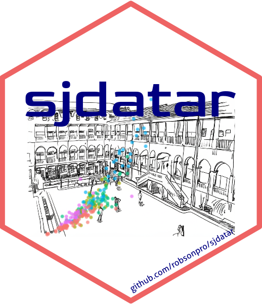

# Certify that devtools is installed
if (!require("devtools")) install.packages("devtools")
# Install the package from github
devtools::install_github("robsonpro/sjdatar")Introduction to sjdatar

The package sjdatar was created to share the datasets collected by the students of Supervised Learning course taught at Federal University of São João del-Rei (UFSJ) in the Industrial Engineering undergraduate. These datasets were used by the students to perform activities about regression and classification modeling. Now they can be used for new students and people interested in supervised learning. New datasets collected by the students will be available in new versions of the package.
Installing and loading the package
library(sjdatar)Dataset aluguel2025sjdr
Dataset containing information on property rentals in São João del Rei for the year 2025, including prices, property features, and location.
data(aluguel2025sjdr)
str(aluguel2025sjdr)'data.frame': 191 obs. of 11 variables:
$ bairro : chr "Tejuco" "" "Fabricas" "Dom Bosco" ...
$ numero_quartos : int 1 1 1 1 1 1 1 2 2 2 ...
$ numero_banheiros: int 1 1 1 1 1 1 1 2 2 1 ...
$ vagas_carro : int NA 0 0 0 0 0 0 0 2 0 ...
$ area_gourmet : chr "N" "N" "N" "N" ...
$ mobiliado : chr "N" "N" "S" "N" ...
$ varanda : chr "N" "N" "N" "N" ...
$ imobiliaria : chr "N" "N" "N" "S" ...
$ tipo : chr "Casa" "Apartamento" "Apartamento" "Apartamento" ...
$ preco : num 600 750 900 900 800 600 800 1200 1500 900 ...
$ Link : chr "https://www.facebook.com/marketplace/item/1445122673503046?ref=browse_tab&referral_code=marketplace_top_picks&r"| __truncated__ "https://www.facebook.com/marketplace/item/1593219631374355?ref=browse_tab&referral_code=marketplace_top_picks&r"| __truncated__ "https://www.facebook.com/marketplace/item/600487866484792?ref=browse_tab&referral_code=marketplace_general&refe"| __truncated__ "https://www.facebook.com/marketplace/item/593497410362949?ref=browse_tab&referral_code=marketplace_general&refe"| __truncated__ ...Dataset apartamentos2024mg
Dataset containing information about apartments available for sale in Minas Gerais, for the year 2024, including sale prices, property characteristics, and location.
data(apartamentos2024mg)
str(apartamentos2024mg)'data.frame': 632 obs. of 14 variables:
$ Cidade : chr "Barbacena" "Barbacena" "Barbacena" "Barbacena" ...
$ Bairro : chr "Santa Tereza" "Boa Morte" "Serra Verde" "Centro" ...
$ Area : num 90 74 54 88 210 133 90 19 104 208 ...
$ Valor : num 320000 296000 198500 349000 590000 ...
$ Quartos : int 2 2 2 3 3 2 3 1 3 3 ...
$ Banheiros : int 2 2 1 3 3 2 2 1 2 2 ...
$ Vaga : int 1 1 0 0 1 0 1 0 1 1 ...
$ Varanda : chr "N" "S" "N" "N" ...
$ Suite : int 0 0 0 1 1 0 0 0 0 1 ...
$ Area.Gourmet: chr "S" "N" "N" "S" ...
$ Terraco : chr "N" "N" "N" "N" ...
$ Sala : int 1 1 1 1 1 1 1 1 1 1 ...
$ Copa : chr "S" "S" "S" "S" ...
$ Piscina : chr "N" "N" "N" "N" ...Dataset biscoitos
Dataset containing information about cookies and crackers available in the Brazilian market, including product characteristics, nutritional claims, and brand information.
data(biscoitos)
str(biscoitos)'data.frame': 300 obs. of 13 variables:
$ produto : chr "Bono Chocolate" "Bono Morango" "Bono Doce de Leite" "Passatempo Chocolate" ...
$ marca : chr "Nestlé" "Nestlé" "Nestlé" "Nestlé" ...
$ linha : chr "tradicional" "tradicional" "tradicional" "tradicional" ...
$ categoria : chr "recheado" "recheado" "recheado" "recheado" ...
$ sabor : chr "chocolate" "morango" "doce de leite" "chocolate" ...
$ peso_g : int 90 90 90 130 150 130 90 90 90 90 ...
$ unidades : int 1 1 1 1 1 1 1 1 1 1 ...
$ integral : chr "não" "não" "não" "não" ...
$ vegano : chr "não" "não" "não" "não" ...
$ sem_acucar : chr "não" "não" "não" "não" ...
$ sem_lactose : chr "não" "não" "não" "não" ...
$ light_diet : chr "não" "não" "não" "não" ...
$ marca_propria: chr "não" "não" "não" "não" ...Dataset carros_eletricos
Dataset containing information about electric cars available in the market, including battery size, efficiency, price, range, top speed, and performance.
data(carros_eletricos)
str(carros_eletricos)'data.frame': 269 obs. of 7 variables:
$ Capacidadebateria: num 37.8 60 85 85 77 77 77 77 77 77 ...
$ Carro : chr "Abarth 500e Convertible" "Aiways U5" "Audi e-tron GT quattro" "Audi e-tron GT RS" ...
$ Eficiencia : int 168 190 202 210 183 195 195 177 186 186 ...
$ Preco : num 241431 233026 624635 860235 311876 ...
$ Autonomia : int 225 315 420 405 420 395 395 435 415 415 ...
$ Velocidade.max : int 155 150 245 250 180 180 180 180 180 180 ...
$ Desempenho : num 7 7.5 4.1 3.3 6.7 6.6 5.4 6.7 6.6 5.4 ...Dataset carrosusados2025webmotors
Dataset containing information about used cars collected from the Webmotors platform in 2025, including model, manufacturer, prices, vehicle characteristics, year, and mileage.
data(carrosusados2025webmotors)
str(carrosusados2025webmotors)'data.frame': 200 obs. of 9 variables:
$ Marca : chr "TOYOTA" "TOYOTA" "TOYOTA" "TOYOTA" ...
$ Carro : chr "COROLLA" "COROLLA" "COROLLA" "COROLLA" ...
$ Ano : int 2024 2024 2024 2024 2023 2024 2019 2020 2022 2023 ...
$ Km : int 5000 31445 28416 31445 63346 31469 101455 56400 59957 64000 ...
$ Cambio : chr "Automatico" "Automatico" "Automatico" "Automatico" ...
$ Motor : num 2 2 2 2 2 2 2 1.8 2 2 ...
$ Valvulas : num 16 16 16 16 16 16 16 16 16 16 ...
$ Combustivel: chr "Flex" "Flex" "Flex" "Flex" ...
$ Preco : int 175900 149400 135690 147990 134990 147990 108900 127990 129490 143900 ...Dataset celularesnovos2025
Dataset containing information about new cell phones available in 2025, including price, model, and technical specifications.
data(celularesnovos2025)
str(celularesnovos2025)'data.frame': 200 obs. of 10 variables:
$ modelo : chr "Samsung Galaxy Z Fold 6" "Samsung Galaxy A56" "Samsung Galaxy S24 FE" "Samsung Galaxy A36" ...
$ marca : chr "Samsung" "Samsung" "Samsung" "Samsung" ...
$ ram : int 16 8 8 8 4 6 4 4 8 12 ...
$ armazenamento: int 1024 256 512 256 128 128 128 128 256 512 ...
$ camerah : int 8165 8165 8165 8165 8000 9238 9000 8000 8165 6330 ...
$ cameral : int 6124 6124 6124 6124 6000 6928 7000 6000 6124 4247 ...
$ ano : int 2024 2025 2024 2025 2025 2021 2021 2021 2023 2025 ...
$ resolucao : chr "8K UHD" "4K (2160p)" "8K UHD" "4K (2160p)" ...
$ bateria : int 4400 5000 4700 5000 4000 4500 5000 5000 5000 3900 ...
$ Preco : int 6999 1833 2498 1599 1574 1529 1169 1559 764 6399 ...Dataset celularesusados
Dataset containing information about used cell phones, including price, technical specifications, condition, and device features.
data(celularesusados)
str(celularesusados)'data.frame': 200 obs. of 8 variables:
$ modelo : chr "Poco X3 NFC 128GB" "Moto G10 64GB" "Galaxy A52 128GB" "Moto G30 128GB" ...
$ marca : chr "Xiaomi" "Motorola" "Samsung" "Motorola" ...
$ anolancamento: int 2020 2021 2021 2021 2021 2020 2021 2020 2020 2019 ...
$ armazenamento: int 128 64 128 128 64 128 128 128 128 64 ...
$ estado : chr "Usado" "Com avarias" "Usado" "Novo" ...
$ notafiscal : chr "Sim" "Nao" "Nao" "Sim" ...
$ fonte : chr "OLX" "OLX" "OLX" "OLX" ...
$ preco : int 926 1630 880 2364 2355 2040 2540 2130 2144 838 ...Dataset computadores
Dataset containing information about laptop computers available in the Brazilian market, including brand, processor, memory, storage, and price.
data(computadores)
str(computadores)'data.frame': 312 obs. of 6 variables:
$ marca : chr "Lenovo" "Acer" "Lenovo" "Asus" ...
$ processador : chr "RYZEN 7" "RYZEN 5-5500U" "INTEL I5-13450HX" "RYZEN 7" ...
$ ram : int 16 16 16 16 16 24 8 16 16 16 ...
$ armazenamento : int 512 512 512 512 512 512 512 512 512 512 ...
$ tipo_armazenamento: chr "SSD" "SSD" "SSD" "SSD" ...
$ preco : num 4999 3699 6199 3699 5894 ...Dataset feijoes
Dataset with measurements on distinct beans found in the Brazilian market.
data(feijoes)
str(feijoes)'data.frame': 250 obs. of 5 variables:
$ feijao : chr "fradinho" "fradinho" "fradinho" "fradinho" ...
$ comprimento: num 9.16 8.76 8.81 8.11 9.08 ...
$ largura : num 6.26 6.59 6.78 6.39 6.42 6.4 6.28 6.68 7.26 6.5 ...
$ espessura : num 5.26 5.01 5.43 4.78 5.22 4.85 5.12 5.24 5.97 5.08 ...
$ massa : num 0.21 0.21 0.24 0.18 0.23 0.16 0.17 0.23 0.27 0.2 ...Dataset folhasfrutas
Dataset on measurements obtained through image analysis of fruit tree leaves.
data(folhasfrutas)
str(folhasfrutas)'data.frame': 235 obs. of 9 variables:
$ especie : chr "goiaba" "goiaba" "goiaba" "goiaba" ...
$ area : num 2.359 2.291 1.887 1.232 0.971 ...
$ perimeter : num 5.58 5.82 5.1 5.22 3.68 ...
$ radius.mean : num 0.91 0.912 0.824 0.748 0.601 ...
$ radius.sd : num 0.157 0.161 0.168 0.285 0.154 ...
$ radius.min : num 0.695 0.651 0.572 0.249 0.311 ...
$ radius.max : num 1.16 1.25 1.1 1.24 0.86 ...
$ majoraxis : num 2.31 2.23 2.15 2.34 1.68 ...
$ eccentricity: int 789 763 819 941 868 909 841 798 908 883 ...Dataset motos_usadas
Dataset containing information about used motorcycles available in the Brazilian market, including brand, model, year, mileage, fuel type, engine displacement, state, and price.
data(motos_usadas)
str(motos_usadas)'data.frame': 304 obs. of 8 variables:
$ Marca : chr "Honda" "Honda" "Honda" "Honda" ...
$ Modelo : chr "NXR 160 Bros" "NXR 160 Bros" "NXR 160 Bros" "NXR 160 Bros" ...
$ Ano : int 2021 2024 2022 2024 2020 2019 2016 2025 2019 2021 ...
$ Quilometragem: int 53988 17300 12873 17900 46000 75000 126000 7000 44000 22408 ...
$ Combustível : chr "Flex" "Flex" "Flex" "Flex" ...
$ Cilindrada : num 162 162 162 162 162 162 162 162 162 162 ...
$ Estado : chr "ES" "MG" "SP" "CE" ...
$ Preco : int 17999 23500 20500 23900 17300 15500 13990 23800 15800 19100 ...Dataset motos_usadas2
Dataset containing information about used motorcycles available in the Brazilian market, including brand, model, year, mileage, engine displacement, fuel type, transmission, color, and price.
data(motos_usadas2)
str(motos_usadas2)'data.frame': 300 obs. of 9 variables:
$ Preco : int 17200 28000 38900 22000 52000 43500 32600 14490 21500 89999 ...
$ Ano : int 2025 2018 2023 2022 2023 2019 2018 2024 2025 2023 ...
$ Marca : chr "Honda" "Honda" "Honda" "Honda" ...
$ Modelo : chr "Honda CG 160 Start ES" "CB 500F ABS" "CB 500F ABS" "ADV" ...
$ km : int 38600 64000 5785 7000 7500 180350 50000 5420 7543 6019 ...
$ Cilindrada : int 160 480 500 150 750 650 480 125 160 998 ...
$ Combustivel: chr "Gasolina" "Gasolina" "Gasolina" "Gasolina" ...
$ Cambio : chr "Manual" "Manual" "Manual" "Automático" ...
$ Cor : chr "Prata-Preto" "Vermelho-Preto" "Cinza-Cinza" "Branco-Branco" ...Dataset simdatac1
Simulated dataset for binary classification with two continuous predictors drawn from a bivariate normal distribution. The binary response variable is defined based on the Mahalanobis distance from the origin, with added noise, generating two overlapping classes suitable for classification modeling tasks.
data(simdatac1)
str(simdatac1)'data.frame': 1000 obs. of 3 variables:
$ x1: num -0.4857 2.2614 0.0879 0.0429 -0.2702 ...
$ x2: num 1.64 1.7 1.22 1.06 1 ...
$ y : Factor w/ 2 levels "0","1": 2 2 1 2 1 1 1 2 2 2 ...Dataset simdatac2
Simulated dataset for binary classification with two continuous predictors drawn from a bivariate normal distribution. The binary response variable is defined based on a quadratic function of the predictors, with added noise, generating two classes separated by a nonlinear boundary.
data(simdatac2)
str(simdatac2)'data.frame': 1000 obs. of 3 variables:
$ x1: num -0.4857 2.2614 0.0879 0.0429 -0.2702 ...
$ x2: num 1.64 1.7 1.22 1.06 1 ...
$ y : Factor w/ 2 levels "-1","1": 2 2 2 2 2 1 1 2 2 2 ...Dataset soja
Dataset containing morphological measurements obtained through image analysis of soybean seeds from different cultivars, for classification purposes.
data(soja)
str(soja)'data.frame': 540 obs. of 32 variables:
$ area : num 5.64 5.4 4.89 5.25 5.12 ...
$ area_ch : num 6.21 5.36 4.88 5.36 5.06 ...
$ perimeter : num 10.36 8.98 8.79 9.38 8.87 ...
$ radius_mean : num 1.34 1.28 1.22 1.27 1.25 ...
$ radius_min : num 0.75 1.02 1.07 0.94 1.05 ...
$ radius_max : num 1.77 1.47 1.37 1.53 1.48 ...
$ radius_sd : num 0.26 0.0849 0.058 0.1526 0.1096 ...
$ diam_mean : num 2.69 2.57 2.45 2.53 2.51 ...
$ diam_min : num 1.5 2.04 2.14 1.88 2.1 ...
$ diam_max : num 3.54 2.93 2.74 3.06 2.96 ...
$ major_axis : num 1.13 0.943 0.895 0.988 0.97 ...
$ minor_axis : num 0.771 0.875 0.839 0.807 0.802 ...
$ caliper : num 3.47 2.85 2.65 3.05 2.85 ...
$ length : num 3.37 2.85 2.63 2.98 2.85 ...
$ width : num 2.16 2.56 2.46 2.46 2.29 ...
$ radius_ratio : num 2.36 1.44 1.28 1.63 1.41 ...
$ theta : num -0.719 1.216 0.753 -0.733 -0.595 ...
$ eccentricity : num 0.731 0.373 0.349 0.577 0.562 ...
$ form_factor : num 0.66 0.842 0.795 0.75 0.817 ...
$ narrow_factor : num 1.03 1 1.01 1.02 1 ...
$ asp_ratio : num 1.56 1.11 1.07 1.21 1.24 ...
$ rectangularity : num 1.29 1.35 1.33 1.4 1.27 ...
$ pd_ratio : num 2.99 3.15 3.32 3.08 3.12 ...
$ plw_ratio : num 1.87 1.66 1.73 1.72 1.73 ...
$ solidity : num 0.908 1.009 1.002 0.98 1.011 ...
$ convexity : num 0.829 0.878 0.843 0.835 0.885 ...
$ elongation : num 0.3574 0.1028 0.0643 0.173 0.1955 ...
$ circularity : num 19 14.9 15.8 16.8 15.4 ...
$ circularity_haralick: num 5.16 15.12 21.1 8.3 11.45 ...
$ circularity_norm : num 0.627 0.804 0.758 0.713 0.777 ...
$ coverage : num 0.0012 0.0011 0.001 0.0011 0.0011 0.001 0.001 0.001 0.0009 0.0009 ...
$ cultura : chr "Soytech" "Soytech" "Soytech" "Soytech" ...Dataset temperos
Dataset containing morphological measurements obtained through image analysis of spice and herb leaves from different species, for classification purposes.
data(temperos)
str(temperos)'data.frame': 300 obs. of 13 variables:
$ especie : chr "Espinafre" "Espinafre" "Espinafre" "Espinafre" ...
$ area : num 3310 2297 3118 3337 2478 ...
$ perimeter : num 230 214 246 232 258 ...
$ length : num 84 84.1 96 83.5 105.2 ...
$ width : num 52.9 42.3 48 56.5 44.8 ...
$ major_axis : num 27 25.4 30 26.8 31.3 ...
$ minor_axis : num 19 14.1 16.3 19.6 13.1 ...
$ eccentricity: num 0.71 0.83 0.84 0.68 0.91 0.72 0.73 0.76 0.68 0.73 ...
$ asp_ratio : num 1.59 1.99 2 1.48 2.35 1.57 1.66 1.65 1.44 1.57 ...
$ elongation : num 0.37 0.5 0.5 0.32 0.57 0.36 0.4 0.39 0.31 0.36 ...
$ circularity : num 15.9 19.9 19.4 16.2 26.9 ...
$ solidity : num 1 0.96 0.98 0.98 0.87 0.99 0.99 0.99 1 0.98 ...
$ form_factor : num 0.79 0.63 0.65 0.78 0.47 0.77 0.76 0.72 0.77 0.74 ...